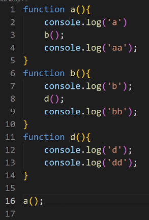

3. Explained what is JavaScript
Event loop and how does an event loop work
JavaScript is a single-threaded language.However,because of the event loop,JavaScript can still
run asynchronously work after it is single-threaded.
Because the event loop has an event queue.That queue is briefly explained below with example
Here is an example:

Call stack:
When the first function is called, the code within its scope is executed. The code on line two
is executed first, and then when the second function is called on line three, the execution of
the first function is paused, and the control is passed to the second function.
The second function then executes the code on line seven, and when the third function is called
on line eight, the execution of the second function is paused, and the control is passed to the
third function.
After executing the code on lines 12 and 13 of the third function, the control is passed back to
the second function where it left off, which is on line nine. Once the second function completes
its execution, the control is passed back to the first function where it left off, which is on
line four. The first function then completes its execution, and the call stack is empty.
Event queue:
The event queue is responsible for sending new functions to the stack for processing. It follows
the queue data structure to maintain the correct sequence in which all operations should be sent
for execution.
When an async function is called, it is sent to a browser API, which runs its own
single-threaded operation. An example of this is the setTimeout method, which is sent to the
corresponding API to wait for the specified time before sending the operation back to the event
queue.
The event queue is a data structure where events, such as user input or network responses, are
placed to be processed later. The event loop constantly checks whether the call stack is empty.
If it is, it checks the event queue for any pending tasks, such as callback functions, and
processes them. If the event queue is empty, the event loop waits for new tasks to be added to
the queue.
The browser APIs and event loop work together to create a non-blocking and asynchronous
environment in JavaScript, allowing multiple operations to be processed simultaneously without
blocking the main thread.